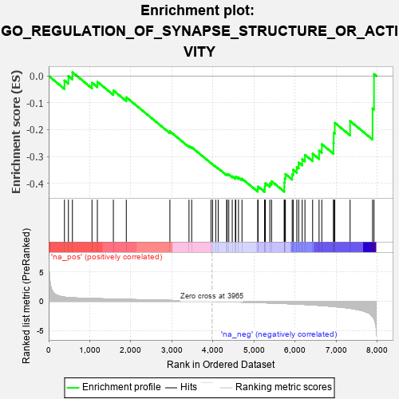

| | | Dataset | 7d |
| Phenotype | NoPhenotypeAvailable |
| Upregulated in class | na_neg |
| GeneSet | GO_REGULATION_OF_SYNAPSE_STRUCTURE_OR_ACTIVITY |
| Enrichment Score (ES) | -0.43181488 |
| Normalized Enrichment Score (NES) | -1.2535697 |
| Nominal p-value | 0.16605617 |
| FDR q-value | 0.5368996 |
| FWER p-Value | 1.0 |
Table: GSEA Results Summary

Fig 1: Enrichment plot: GO_REGULATION_OF_SYNAPSE_STRUCTURE_OR_ACTIVITY
Profile of the Running ES Score & Positions of GeneSet Members on the Rank Ordered List
| PROBE | GENE SYMBOL | GENE_TITLE | RANK IN GENE LIST | RANK METRIC SCORE | RUNNING ES | CORE ENRICHMENT | | 1 | MESD | | | 384 | 0.713 | -0.0170 | No |
| 2 | CDC20 | | | 480 | 0.644 | -0.0006 | No |
| 3 | MX1 | | | 578 | 0.604 | 0.0138 | No |
| 4 | MEF2C | | | 1054 | 0.473 | -0.0252 | No |
| 5 | CRIPT | | | 1185 | 0.449 | -0.0218 | No |
| 6 | FZD1 | | | 1574 | 0.379 | -0.0540 | No |
| 7 | PAK3 | | | 1889 | 0.322 | -0.0795 | No |
| 8 | RAB17 | | | 2950 | 0.157 | -0.2063 | No |
| 9 | KIF1A | | | 3415 | 0.088 | -0.2610 | No |
| 10 | CDK5 | | | 3480 | 0.080 | -0.2655 | No |
| 11 | GPC6 | | | 3950 | 0.002 | -0.3246 | No |
| 12 | VPS35 | | | 3989 | -0.006 | -0.3291 | No |
| 13 | ROBO2 | | | 4066 | -0.018 | -0.3379 | No |
| 14 | ABL1 | | | 4125 | -0.027 | -0.3440 | No |
| 15 | OPA1 | | | 4330 | -0.065 | -0.3669 | No |
| 16 | SETD5 | | | 4343 | -0.067 | -0.3655 | No |
| 17 | ARF4 | | | 4383 | -0.073 | -0.3671 | No |
| 18 | LRRK2 | | | 4467 | -0.087 | -0.3738 | No |
| 19 | NTRK2 | | | 4543 | -0.104 | -0.3786 | No |
| 20 | ABI2 | | | 4554 | -0.106 | -0.3752 | No |
| 21 | DLG5 | | | 4619 | -0.121 | -0.3779 | No |
| 22 | ARF6 | | | 4704 | -0.140 | -0.3824 | No |
| 23 | DRD2 | | | 5088 | -0.221 | -0.4209 | Yes |
| 24 | ITSN1 | | | 5094 | -0.222 | -0.4117 | Yes |
| 25 | SSH1 | | | 5254 | -0.258 | -0.4204 | Yes |
| 26 | PTEN | | | 5262 | -0.261 | -0.4098 | Yes |
| 27 | EPHA4 | | | 5273 | -0.265 | -0.3994 | Yes |
| 28 | GRIN1 | | | 5381 | -0.291 | -0.4000 | Yes |
| 29 | MDGA1 | | | 5424 | -0.301 | -0.3920 | Yes |
| 30 | LRFN4 | | | 5733 | -0.387 | -0.4138 | Yes |
| 31 | SLIT1 | | | 5735 | -0.387 | -0.3969 | Yes |
| 32 | MX2 | | | 5745 | -0.390 | -0.3808 | Yes |
| 33 | TLR2 | | | 5761 | -0.395 | -0.3652 | Yes |
| 34 | LRFN1 | | | 5926 | -0.443 | -0.3663 | Yes |
| 35 | DCTN1 | | | 5950 | -0.454 | -0.3492 | Yes |
| 36 | PPT1 | | | 6038 | -0.485 | -0.3388 | Yes |
| 37 | DBNL | | | 6084 | -0.501 | -0.3224 | Yes |
| 38 | GRID2 | | | 6170 | -0.528 | -0.3098 | Yes |
| 39 | CDC42 | | | 6236 | -0.548 | -0.2938 | Yes |
| 40 | PTPRD | | | 6423 | -0.629 | -0.2895 | Yes |
| 41 | CLN3 | | | 6580 | -0.699 | -0.2783 | Yes |
| 42 | PTPRS | | | 6646 | -0.738 | -0.2539 | Yes |
| 43 | LRP8 | | | 6931 | -0.889 | -0.2505 | Yes |
| 44 | GHSR | | | 6937 | -0.894 | -0.2117 | Yes |
| 45 | DNM1L | | | 6963 | -0.913 | -0.1745 | Yes |
| 46 | NGEF | | | 7335 | -1.209 | -0.1680 | Yes |
| 47 | FYN | | | 7881 | -2.622 | -0.1210 | Yes |
| 48 | ASIC2 | | | 7917 | -2.995 | 0.0068 | Yes |
Table: GSEA details [plain text format]
Fig 2: GO_REGULATION_OF_SYNAPSE_STRUCTURE_OR_ACTIVITY: Random ES distribution
Gene set null distribution of ES for GO_REGULATION_OF_SYNAPSE_STRUCTURE_OR_ACTIVITY